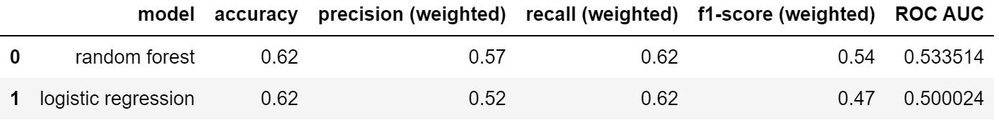
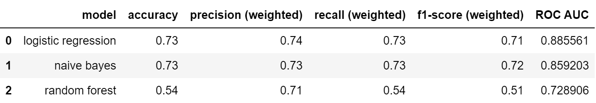
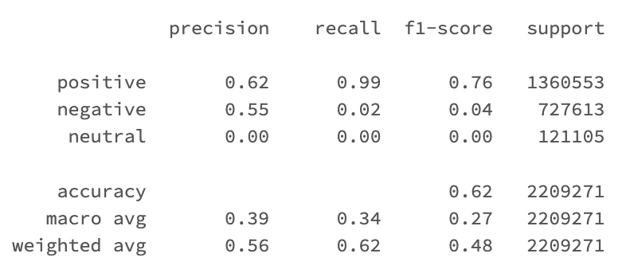
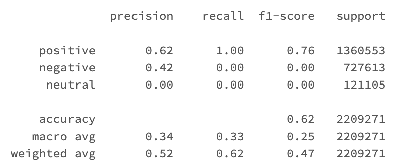
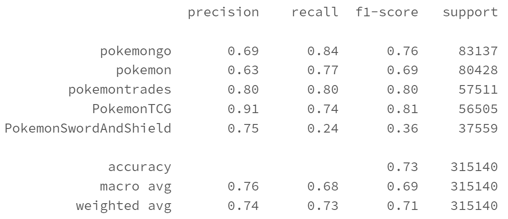
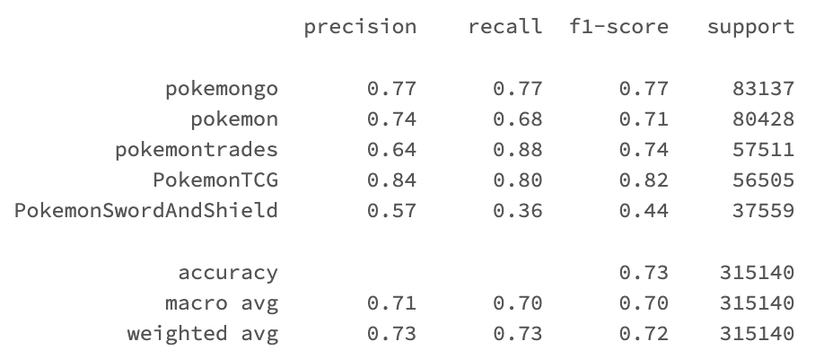
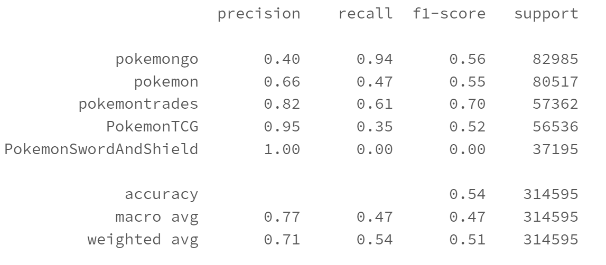
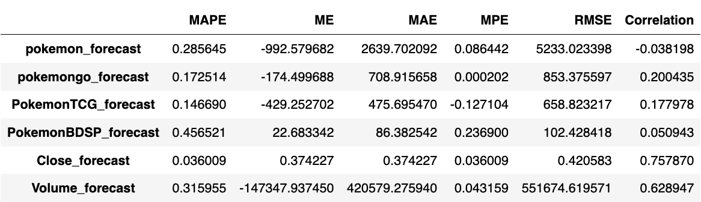

Milestone 3: Machine Learning
Coding Notebooks
Executive Summary
|
In this milestone, we focus on applying machine learning models to achieve two classification tasks: predicting sentiments of comments based on present of Pokémon and classifying submission titles to subreddits. For the first task, the reason of performing this task is to determine if certain Pokémon can influence people’s sentiments, so The Pokémon Company can make advertising strategies based on the result. We train two machine learning models, random forest and logistic regression to use present of certain Pokémon including, Charizard, Pikachu, Eevee, Weather Trio, Legendary Beasts, Creation Trio to predict sentiments of comments in Pokémon subreddits. Both models don't show promising ability to predict sentiments (Table 1). We think there are some factors may lead to this terrible model performance. First, number of present of these Pokémon is relatively small compared to all comments, so we should focus on comments containing these Pokémon instead of all comments. Second, sentiment labels are created by sentiment model which may not be accurate. The gap between sentiment generation process and prediction process may lead to huge error. Third, at current stage, both models are far from fine-tuned, so we believe further tuning models can improve their performance. Fourth, using more complicated models like deep learning might generate better results. However, due to hardware limitation, we cannot perform deep learning on the databricks cluster (no GPU). We think this is a path worth further investigation. For the conclusion, our current model cannot predict sentiments of comments using present of Pokémon. Table 1. Model selection of sentiments classification
 The second task is to classify submission titles to subreddits. In the Pokémon subreddits which are widely discussed by the players, users sometimes cannot accurately distinguish the content they need to browse. With this task, we can archive the content published in the Pokémon subreddits to the corresponding subreddit. We can also label the posts in Pokémon subreddits to help users find their target contents and improve their browsing experience. We build three models including logistic regression, naïve bayes and random forest. Compared with the other two models, the performance of random forest is obviously worse than the other two. The results of logistic regression and naïve bayes are very close and both models show promising ability to classify the subreddit by content. However, both models have significantly poor ability to predict Pokémon Sword and Shield. We speculate that Pokémon Sword and Shield has a lot of overlays in contents with Pokémon and Pokémon go, so it’s difficult for models to distinguish this subreddit from others. Although these models are not perfect, we think that they are capable of effectively classifying subreddits by contents. Tabel 2. Model selection of text classification

|
Analysis Report
- Sentiments Classification
11. Is certain Pokémon influencing people's sentiments in Pokémon subreddits?
The original business question focuses on analyzing sentiment results but not on how Pokémon is affecting sentiments. To further investigate how people’s sentiments are influenced by Pokémon, we decide to propose a new business question. In this section, we use machine learning methods including random forest and logistic regression to predict sentiments based on present of certain Pokémon. Both models show very terrible performance in predicting sentiments. Thus, based on current result, we cannot say people’s sentiments are influenced by certain Pokémon. We propose some steps for further research which may can significantly change our current result.
Random Forest
|
Tabel 3. Random Forest model performance

To answer our business question, we decide to build machine learning models to predict comment sentiments using Pokémon dummy variables. The first model we trained is random forest. This model predicts most of comments as positive which lead to the high f-1 score in positive and very low f-1 scores in negative and neutral. The ROC AUC value of 0.5335 also indicates this model has almost no ability to predict comment sentiments. The worst prediction is about the neutral sentiment. However, this may not be a problem of the classification model, because neutral sentiment is a very small part of the overall datasets and it's inherently indistinguishable and unbiased. This model shows very little ability to predict sentiments based on Pokémon. However, by changing hyperparameter sets to create more complicted random forest, model performace increases. Thus, we think further tuning the random forest can improve the model performance. Figure 1. Confusion matrix of Random Forest model
|
Logistic regression (softmax)
|
Tabel 4. Logistic Regression model performance

The second model we build is the logistic regression model or SoftMax regression to compare with random forest. By changing parameters, we transform it to ridge regression and lasso regression. The performance of logistic regression is very similar to the random forest. It also predicts almost all comments as positive. The ROC AUC value of ridge regression is 0.500024 and that of lasso regression is 0.5 which are even worse than the random forest. Both negative and neutral has f-1 score of 0, so this model cannot make correct prediction of these two sentiments. We can conclude that the logistic regression model has no ability to predict comments sentiment based on Pokémon. Because the performance of logistic regression is so bad, we think further tuning may not be useful to improve prediction results. We think the logistic regression model may not be suitable for this classification task. Figure 2. Confusion matrix of Logistic Regression model
|
- Text Classification
10. Can we classify submissions to their subreddit based on submission contents?
In this section, we focus on classification of submission titles to subreddits. We build three models, including logistic regression, naïve bayes and random forest. We follow the proposed technical methods in this section. The result shows that both logistic regression and naïve bayes models have promising ability to classify submission title to subreddits.
Logistic regression (softmax)
|
Tabel 5. Logistic Regression model performance

To answer our business question, we decide to build machine learning models to classify submission titles to their subreddits. Submission titles are text data which cannot be directly used as input for models, so we should further process submission titles data. We tokenize submission titles with regular expression, removing stop words and vectorize tokens by term frequency. The first model we build is multinominal logistic regression or SoftMax regression. The text classification creates a large number of features, so it's possible that our model will suffer from multicollinearity. To resolve this problem, we decide to use Ridge regression which has elastic net of 0 to train model. The confusion matrix and evaluation metrics including accuracy, precision, recall and f-1 score are shown above. The PokemonTCG has the highest precision and f-1 score which are 0.91 and 0.81 respectively. To improve the performance of the model, we perform 5-fold cross validation using different combination of parameters. The result model has similar performance compared to the model we first trained. This indicates that the model we trained is good enough and further tuning may not improve model performance significantly. Figure 3. Confusion matrix of Logistic Regression model
|
Naive Bayes
|
Tabel 6. Naive Bayes model performance

The confusion matrix and table above show the classification result of naive bayes model. This model has similar overall accuracy compared to the random forest which are 0.73 and 0.72 respectively. The result also shows the similar pattern as the random forest that PokemonTCG has the highest prediction accuracy and PokemonSwordAndShield has the lowest. The naive bayes model has better ability to predict pokemongo and pokemon, but has lower prediction accuracy in pokemontrades. Considering the fact that pokemongo and pokemon are top two common labels in the training data, we think the ability to predict pokemon and pokemongo is more important than predicting pokemontrades. Although the accuracy of predicting PokemonSwordAndShield is low, the naive bayes has higher f-1 score which is 0.44 than that of the logistic regression which is 0.36. This indicates that the naive bayes model has higher overall accuracy in predicting PokemonSwordAndShield. Thus, we think the naive bayes model has better ability to predict subreddit than the logistic regression model. Figure 4. Confusion matrix of Naive Bayes model
|
Random Forest
|
Tabel 7. Random Forest model performance

The random forest doesn’t show promising ability to classify subreddits compared to previous models. It even has no ability to correctly predict PokemonSwordAndShield. All three models have significantly high precision in predicting PokemonTCG. The PokemonTCG is about the trading card game which is distinctive from other Pokemon products, so we speculate that special contents of this subreddit make it easy for the model to predict. The model has the worst ability to predict PokemonSwordAndShield among all subreddits. The PokemonSwordAndShield has a lot of overlaps with pokemon and pokemongo, making it similar with other subreddits. Thus, the model fails to distinguish PokemonSwordAndShield from other subreddits. |
- Time Series Analysis
9. Can we use number of posts in Pokémon subreddits to predict the stock price of Nintendo?
In this section, we train a time series model VAR to predict number of comments in Pokémon subreddits and Nintendo stock price. We follow the proposed technical methods. The result model has very bad performance in predicting number of comments in subreddits but show some ability to forecast Nintendo stock price and trading volume.
|
Figure 5. Forecast of future 10 days Nintendo stock price
To investigate if it's possible to use number of posts in Pokémon subreddits to predict the stock price of Nintendo, we train a vector autoregressive (VAR) model to predict number of comments in Pokémon subreddits and stock price. The plot above shows the forecast stock price by the model vs. actual stock price and table shows multiple metrics to evaluate forecast results. The actual stock price fluctuates during the predicted 10-day period which has several sudden changes from Aug 23 to Aug 26. The model cannot predict these changes and can only capture the trend of the stock. The metrics table shows that the model has very poor ability to predict number of comments in subreddits and it's surprising to see that the accuracy of predicting stock price is much higher. This may indicate that the number of comments in Pokémon subreddits have more randomness than the stock price, so it's very difficult for time series model to capture patterns. The RMSE of the predicted stock price is about 0.4206 which is about 3.6% of total stock price. Although the error seems small, we think it's not good enough considering the short period of prediction. Thus, we do not recommend using this model to guide the investment strategy. Tabel 8. VAR Model evaluation for stock prediction

|